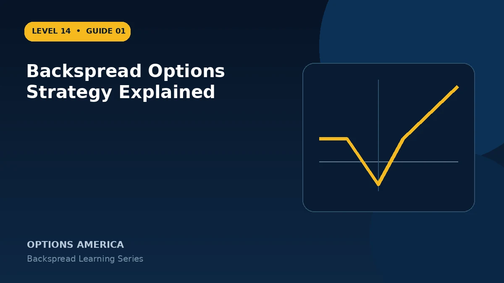

Learn how a ratio backspread uses more long options than short options to create asymmetric exposure to a large market move.
The asymmetric ratio
The common 1-by-2 structure sells one option and buys two options of the same type at another strike and expiration. More long contracts than short contracts create positive convexity when price moves far enough.
Call and put versions
A call backspread targets a strong upside move by selling a lower-strike call and buying more higher-strike calls. A put backspread targets a sharp decline by selling a higher-strike put and buying more lower-strike puts.
The dangerous middle
The trade is not simply a cheap long-volatility position. Its largest expiration loss often occurs near the strike of the extra long options, where the short option has intrinsic loss but the long options have not yet created enough value.
Volatility and path
Positive gamma and vega can support the trade, but direction, speed, time decay, skew and entry credit or debit all matter. A modest move into the loss valley can be worse than no move at all.
A practical example
Sell one 100 call and buy two 105 calls for a small credit. A large rally above the upper breakeven creates uncapped upside, while expiration near $105 can produce the maximum loss.
This simplified example focuses on selected expiration outcomes; live prices and risks will differ. Live option prices also reflect the underlying price, time decay, rates, dividends, liquidity and transaction costs. Greeks are theoretical estimates, not guarantees.
Turn the payoff into a trading plan
Before entering backspread options strategy explained, write down the stock price, both strikes, expiration, contract ratio and total opening credit or debit. Then calculate the quiet-side result, maximum loss at the long-option strike and the far-move breakeven. These three checkpoints make the position easier to monitor and help prevent the attractive tail payoff from hiding the loss valley.
Test at least five scenarios: no move, a move to the short strike, a move to the long strike, a move to breakeven and a move well beyond breakeven. Repeat the exercise with implied volatility higher and lower and with less time remaining. The resulting range is more useful than a single payoff line because a live backspread can change substantially before expiration.
Finally, define the catalyst, maximum acceptable loss, review date and closing method in advance. Use one multi-leg order whenever possible, confirm every fill and recalculate the remaining position before changing any leg. Assignment, liquidity and transaction costs belong in the plan even when the expiration loss appears defined.
Frequently asked questions
Is a backspread unlimited risk?
A standard call backspread has uncapped upside profit and a defined loss valley; verify the exact structure.
Why buy more options than are sold?
The extra long option creates convex exposure beyond the purchased strike.
Can it open for a credit?
Yes, although pricing can also require a debit.
Continue the Backspread Strategies cluster
Explore related guides: Call Ratio Backspread Explained · Ratio Backspread Example With Full Payoff Scenarios · Ratio Backspread vs Long Straddle. For a structured sequence, use the free Level 14 – Backspread course.
Options involve risk and are not suitable for every investor. This material is educational and is not investment, tax or legal advice. Greeks are theoretical estimates, and contract terms and broker requirements can vary.